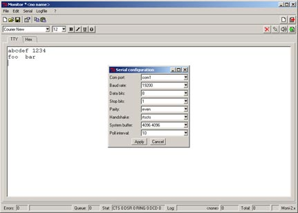
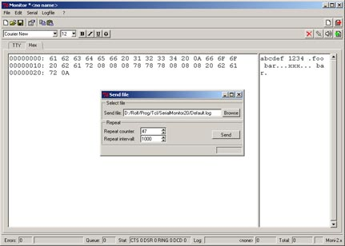

Moni: A serial port monitor written in Tcl/Tk
Version 2.34: February 2008
Changes / Download
Moni (who is moni ?) is a raw serial port terminal
program written in plain Tcl running
under Windows, Linux & Solaris.
It requires Tcl8.4 or later (enhanced serial support).
Moni opens a connection to a serial port and displays incoming data
in ASCII and/or Hexadecimal.
It supports:
- Serial configuration including handshake options
- Sending of ASCII and hexadecimal charaters to the port
- Send the contents of a file with repetition
- Logging of all incoming data
- Manual setting and monitoring of handshake lines (since Moni 2.20)
Moni uses the fantastic BWidgets toolkit.
Screenshot of the TTY (ASCII) display and serial port configuration:

Screenshot of hexadecimal display and send file tool:

Please feel free to use, redistribute and modify Moni for
your own needs.
Download Moni version 2.34:
- Starkit distribution: moni234.kit (0.4 MBytes)
- The Moni234 starkit runs under Windows and Linux
- The Tcl sources may be extracted from the starkit using the SDX tool
- Starkit including sample plugins: moni234+plugins.zip (0.4 MBytes)
- Moni 2.34 supports plugins (external Tcl scripts extending Moni)
- Three sample plugings are provided with Moni:
- tty.tcl - A simple user callback for incoming and outgoing characters
- S-Records.tcl - A Motorola S-Record loader I am using quite frequently for embedded systems
- MyMacros.tcl - Another sample to show how to write your own plugins
- Complete Moni sources including starkit for Windows: moni234source.zip (2.3 MBytes)
Older Moni versions:
Moni 2.20:
Changes:
Moni 2.34:
- Added support for plugins (first plugin: S-Record loader)
- Added Disconnect / Connect button and menu (follwing an idea of Matthew Fatheree)
- Added "Edit/Copy all" menu entry - copying complete Ascii/Hex window to clipboard.
- User defined TTY callbacks may be defined as plugin
- Support external callback ::tty::key processing key presses in TTY (ascii) text widget
- Support external callback ::tty::input processing incoming characters (terminal emulation)
- Added command-line options to load a config file & connect/disconnect serial port
- Bug fixes:
- Fixed file logging to flush file when logging is disabled.
- Fixed character "echo" not written to log-file.
- Disconnect doesn't destroy text data.
Moni 2.20:
- Added manual setting and monitoring of handshake lines
- Added ballon help for status window fields
Moni 2.10:
- Switch to Tcl 8.4 (extended serial port support)
- Linux platform support
- Binaries release using TclDevKit / Starkit
Who is Moni:
The program is dedicated to our sweet "Moni" (Aug 1995 - Aug 1999)
Contact: 
{kind=link}
{kind=link}
{kind=link}